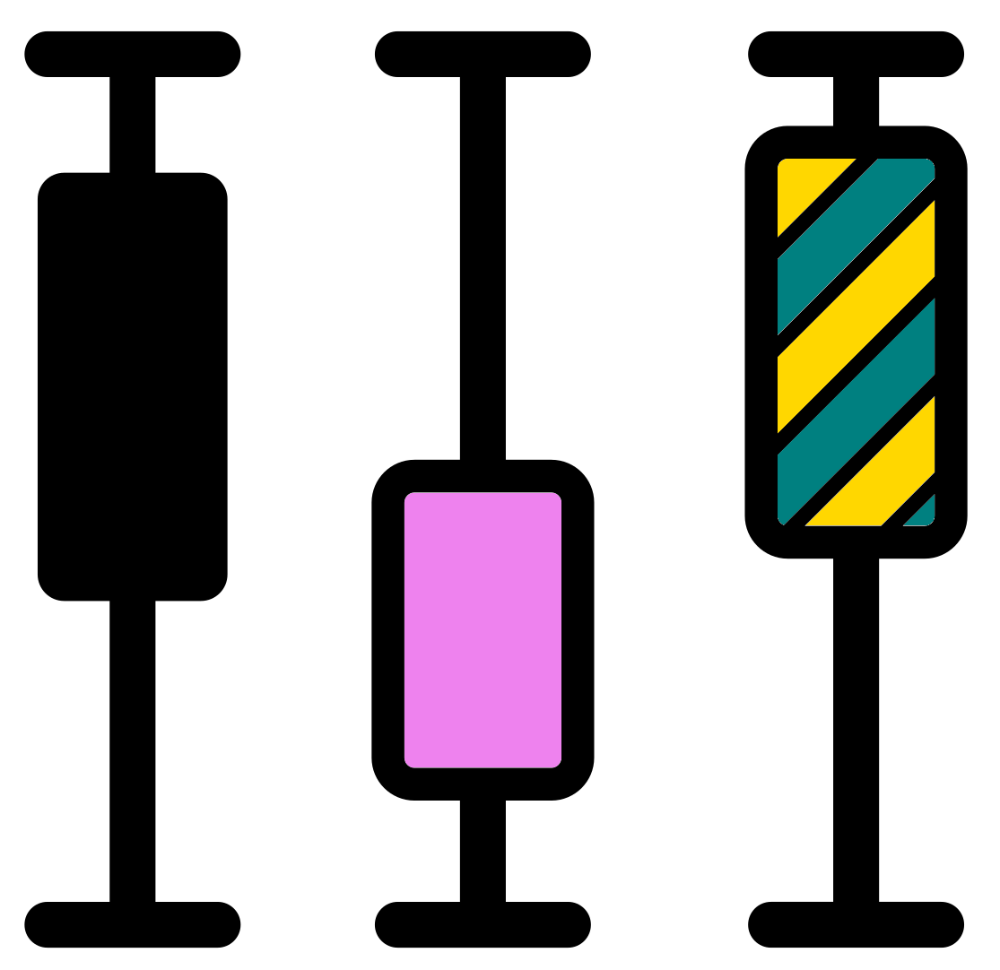

Chapter 9 Minimum read depth
It is good to remove samples with a very low read depth (number of sequencing reads). But determining an appropriate minimum read depth is not trivial. This value will vary from study to study. Normally, for 16S data, a depth of at least 20K per sample is suggested. This is the general consensus for human microbiome data.
In this chapter we will:
- Cover a brief intro to considerations of what is an acceptable minimum depth for your dataset.
- Reinvestigate our sample depths with a previously created histogram.
- View the depth ranges of different sample groups (site & media) with box plots.
- Create a rarefaction curve to assess if the depth of our samples have captured a good amount of biodiversity.
- Demonstrate how to filter samples by depth.
9.1 Considerations

There are 3 main considerations to take into account when choosing an appropriate depth for your dataset.
- The biodiversity of your samples.
- If your sample is very biodiverse, such as the human gut microbiome, you will need a good depth (>20K per sample).
- If your sample is less biodiverse, such as many geological environments or skin, then you will not need as much read depth.
- Rarefaction curves are a good method to determine if your samples have enough depth. We will look at this in this chapter.
- The biomass of your samples.
- Some environments are hard to extract DNA from.
- If this is the case for you, then people will hopefully accept that this is an unfortunate reality of life and you will use what you can.
- Be careful of your conclusions. If you think your dataset doesn't have as much data as it could, do not make very definitive detailed claims.
- Read depth of sample groups.
- It may be possible that a few samples have a much lower depth than the rest. It may be a good idea to remove them.
- However, these may all come from the same sample group and so you have lost all information of one group.
- For instance, you may be comparing different geological surfaces and your rock samples have much lower read depths than the various soil samples.
- For comparisons including the lower depth sample group (e.g. rock samples) you will need to retain the lower depth samples.
That is a brief overview of that topic. If you are interested in more I suggest you look at papers where they have studied an environment similar to yours.
9.2 Minimum read depth section title
In the next section of our jupyter-notebook we will investigate what the minimum read depth should be and remove samples with a lower depth.
Create a new "Markdown" cell and add the following 2nd level header.
9.3 Read depth vector and histogram
We have already created a vector and histogram of the read depths across our samples. Scroll up your notebook to view these and answer the following MCQ:
- What is the approximate read depth range of our dataset?
This is a good first step but what if we want to know how the read depths vary between sample groups?
9.4 Sample depth boxplot

We are going to use ggplot2 to create a couple boxplots to show the sequencing depth ranges of the different sample groups (Site & Media).
9.4.1 Creating a data frame for boxplots
First, we need to create an object containing our sample names, site & media information, and the depth.
We will use this object to produce our boxplots.
Thankfully the metadata in our phyloseq object contains all this information except the depth.
In a new cell write and run the below code. This will extract the sample data (metadata) to a new object and display the top 6 rows of this new object.
#Extract sample data as a separate R object
abundance_metadf <- phyloseq::sample_data(pseq)
#View top 6 rows of metadata data frame
head(abundance_metadf)The 2 new functions above are:
phyloseq::sample_data(): Extracts the sample data (metadata) data frame from aphyloseqobject.head(): Returns the first 6 parts of an R object by default.- It can be used for a vector, matrix, table, data frame, or function.
- In the case of a data frame it returns the first 6 rows.
We need to add the depth information to our new data frame.
We have extracted this previously into an object called sample_depths.
However, before adding it we want to check if it has the same order of samples as the rows in abundance_metadf.
Write and run the below script in the same cell. The code uses head() to view the first 6 elements of sample_depths and the row names of abundance_metadf. Then the function identical() is used to see if they are identical (TRUE) or not (FALSE).
#Check if our vector of sample_depths has the same order as our metadata rows
head(names(sample_depths))
head(row.names(abundance_metadf))
identical(names(sample_depths),row.names(abundance_metadf))The order of samples is identical so we can add the depth information to abundance_metadf. Carry this out in the same cell with the code below.
#Add sample depths to metadata data frame
abundance_metadf[,"depth"] <- sample_depths
#View top 6 rows of edited metadata dataframe
head(abundance_metadf)Great! We will use this data frame to create 2 boxplots.
9.4.2 ggplot2 boxplot

We are going to create 2 boxplots with ggplot2.
We won't go into too much detail on how the code works here, instead learning more later in this book.
The code below creates a ggplot2 boxplot. We carry this out with 2 functions:
ggplot(): This creates aggplot2object, storing the information and aesthetics.- The first option is the data we want to use for plotting (
abundance_metadf). - The second option is the aesthetics (
aes()) to plot. In this case we want the depth column to be plotted on the y-axis (y=depth) and the site column to be plotted on the x-axis (x=site).
- The first option is the data we want to use for plotting (
+: We need to have a+at the end of theggplot()function to add the next component of the plot.geom_boxplot(): This adds a layer to ourggplot2object. In this case it converts theggplotobject, which is just information, into a boxplot.
Write and run the following code in a new cell:
#Create ggplot2 boxplot of depth by site
boxplot <- ggplot2::ggplot(abundance_metadf, aes(y=depth, x=site)) +
ggplot2::geom_boxplot()We have a saved ggplot2 object but now we need to save it as a image file and display it.
9.4.3 Save ggplot as png

You can save a ggplot object as an image file with ggsave().
This allows you to select the size and resolution (dpi) of the image.
This can then be displayed with IRdisplay::display_png().
#Save ggplot object as png file
ggsave(filename = "./boxplot_x_site_y_depth.png", plot = boxplot,
device = "png", dpi = 300, units = "mm", height = 100, width = 150)
#Display the plot in jupyter notebook
IRdisplay::display_png(file="./boxplot_x_site_y_depth.png")- Which site has the highest median depth (middle line of boxplot)?
9.4.4 Media by depth boxplot
We will use the same code to plot the depth by media. You can copy and paste the code changing all the instances of site to media. Carry this out in the same cell and run the code.
#Create ggplot2 boxplot of depth by media
boxplot <- ggplot2::ggplot(abundance_metadf, aes(y=depth, x=media)) +
ggplot2::geom_boxplot()
#Save ggplot object as png file
ggsave(filename = "./boxplot_x_media_y_depth.png", plot = boxplot,
device = "png", dpi = 300, units = "mm", height = 100, width = 150)
#Display the plot in jupyter notebook
IRdisplay::display_png(file="./boxplot_x_media_y_depth.png")- Which media has the lowest median depth (middle line of boxplot)?
From the boxplots we can see there is no drastic difference between the depths of the different media groups. We will therefore continue and make some rarefaction curves to further assess the depth of our samples.
For more resources on ggplot2 please see the appendix of this book.
9.5 Rarefaction curve

Our read depths appear a bit low, each sample has <20K reads. However, this might be fine for our dataset since we are using surface water samples rather than human gut microbiome samples. Let's see how our samples look with a rarefaction curve.
Note: This is a quick example and we will go into more detail in the rarefaction chapter.
Surprisingly, there is not a good method to produce a rarefaction curve with the phyloseq or microbiome packages.
We will therefore use the vegan package.
vegan is an R package for community ecologists.
It has a variety of functions but it uses normal R data frames rather than phyloseq objects.
We will therefore only use it for rarefaction purposes.
9.5.1 ASV abundance data frame

Before creating our rarefaction curve we will extract the ASV abundance table from the phyloseq object with phyloseq's function otu_table().
We need to transpose (t()) the table so it is in the correct orientation for the rarefaction function.
Additionally, we will ensure it is a data frame with the function as.data.frame().
Carry this out in a new cell.
9.5.2 vegan's rarecurve
With this data frame we can create a rarefaction curve with vegan's rarecurve() function.
Add the following code to the same cell and run it.
#Save as png
png(filename = "rarefaction.png", res = 300,
units = "mm", height = 200, width = 200)
#plot
vegan::rarecurve(
x = asv_abund_df, step = 50,
xlab = "Read depth",
ylab = "ASVs"
)
dev.off()
#Display the plot in jupyter notebook
IRdisplay::display_png(file="./rarefaction.png")Note: You will get a warning saying "most observed count data have counts 1, but smallest count is 2". This can be ignored in this case.
In essence, we are hoping that the majority of samples have plateaued. If the curves have flattened in relation to the y axis this indicates that most of the ASVs present in the sample have been captured.
Our samples have plateau'd or have gentle slopes towards the end. With this we can be happy to continue and not remove samples by a minimum read depth.
If we saw some samples with steep curves and low depths we could carry out some more analysis with rarefaction. However, more rarefaction functions, analysis, and theories will be covered in the rarefaction chapter. You could use some of these at this point to help you determine your minimum read depth for your own datasets.
9.6 Filtering by minimum read depth
What if you want to filter samples by a minimum read depth?
You can use the subset_samples() function from phyloseq().
We will use our previously created vector containing read depths (sample_depths) to remove sample with less than 11k reads.
We have chosen this depth as an example to remove some samples.
Write and run the below code in a new cell.
It will create a new subsetted phyloseq object.
#Subset and keep samples with more than 11k reads
pseq_min11K <- phyloseq::subset_samples(pseq, sample_depths > 11000)After removing samples it is also useful to remove ASVs with no abundance values. This can occur when ASVs are only present in the samples which have been removed.
To remove these ASVs we can use two phyloseq functions:
taxa_sums(): Returns a vector showing sum of all taxa in the abundance table.- In our
phyloseqobject the ASVs are the taxa. - ASVs have long human unfriendly names that are unique to every single ASV possible.
- In our
prune_taxa(): This retains taxa/ASVs based on a provided vector.- We are creating a logical vector (
TRUE/FALSE) where ASVs with 0 abundance areFALSEand ASVs with abundance > 0 areTRUE.
- We are creating a logical vector (
We'll first write and run some commands with taxa_sums() to get some practice with it. Carry this out in the same cell as the subset_samples() command.
#Abundance sums of the 1st six ASVs
head(phyloseq::taxa_sums(pseq_min11K))
#View number of ASVs in our data
length(phyloseq::taxa_sums(pseq_min11K))In the same cell add the following. This will filter out ASVs with no abundance.
#Remove ASVs with no abundance
pseq_min11K <- phyloseq::prune_taxa(
phyloseq::taxa_sums(pseq_min11K) > 0, pseq_min11K
)Finally, summarise the contents of the phyloseq object.
Add the following in the same cell and then run the code in the cell.
#Summarise subsetted phyloseq
microbiome::summarize_phyloseq(pseq_min11K)
microbiome::readcount(pseq_min11K)
length(phyloseq::taxa_sums(pseq_min11K))
pseq_min11KWe can see that the data lost 26 ASVs (2551 - 2525).
Try to write your own R code in a new cell to answer the following questions:
- What is the difference of the minimum number of reads between
pseq_min11Kandpseq? - How many samples were removed due to the read depth filtering?
- How many reads were removed by the minimum read filtering?
Combining microbiome::readcount() with min(), length(), and sum() might help.
#Difference of minimum read numbers
min(microbiome::readcount(pseq_min11K)) - min(microbiome::readcount(pseq))
#Number of samples lost
length(microbiome::readcount(pseq)) - length(microbiome::readcount(pseq_min11K))
#Number of reads removed
sum(microbiome::readcount(pseq)) - sum(microbiome::readcount(pseq_min11K))
#Bonus
#List the removed samples
setdiff(phyloseq::sample_names(pseq), phyloseq::sample_names(pseq_min11K))We won't actually use this subsetted file as we want to keep all the samples in this case.
Since we are not removing any samples we don't need to remove any ASVs as they should all have a total abundance > 0.
You can therefore remove the new phyloseq object in a new cell.
Once you are finished with this notebook you can save it then close and halt it.
9.7 Minmum read depth: Summary

We have assessed the read depth in this chapter and decided to not remove any samples. This assessment included:
- Viewing a histogram of sample read depths.
- Creating boxplots to compare the sample read depths across sample groups (site and media).
- Producing a rarefaction depth to determine if any samples did not represent a good amount of the ASVs present in the environment.
Additionally, we created a new phyloseq object where the samples were filtered by depth.
Ultimately we did not keep the filtered phyloseq object but it is good to know how to do this for your future research.